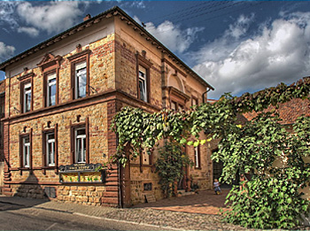
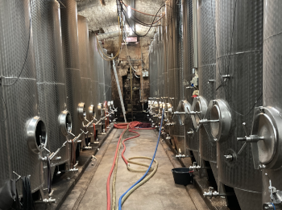

Weingut
Unser familiengeführtes Weingut lebt seit Generationen von den Erzeugnissen der Rebe.
Von der Pflege der Weinberge, der heranwachsenden Trauben bis zur Ernte und der Arbeit im Keller liegt alles in unserer Hand.
Wir legen größten Wert auf Sorgfalt und Qualität.
Dabei hilft uns das Wissen von Generationen.
Dies zeigt sich in den ausgereiften Weinen die wir stets, jedes Jahr aufs Neue, für Sie erzeugen.

Unsere Weinprobierstube
Natürlich sind Sie uns jederzeit herzlich willkommen.
In unserer Weinprobierstube können Sie von all den leckeren Weinen probieren.
Unsere Sortiment der weißen Rebsorten beeinhaltet Riesling, Bacchus, Kerner, Grauburgunder, Weißburgunder, Chardonnay, Sauvignon Blanc, Morio-Muskat, Ruländer, Gewürztraminer, Rieslaner, Müller-Thurgau und Winzergeselle.
Für die Rotweinliebhaber bieten wir Dornfelder, Heroldrebe, Lemberger, Cabernet Sauvignon, Pinot noir, Acolon und Frühburgunder an.
Natürlich sind Sie uns jederzeit herzlich willkommen.
In unserer Weinprobierstube können Sie von all den leckeren Weinen probieren.
Unsere Sortiment der weißen Rebsorten beeinhaltet Riesling, Bacchus, Kerner, Grauburgunder, Weißburgunder, Chardonnay, Sauvignon Blanc, Morio-Muskat, Gewürztraminer, Rieslaner.
Für die Rotweinliebhaber bieten wir Dornfelder, Heroldrebe, Lemberger, Cabernet Sauvignon, Pinot noir, Acolon und Frühburgunder an.
Der Keller
All die Arbeit draußen in den Weinbergen mündet letztendlich im Weinkeller. Hier zeigt sich die Erfahrung und das Wissen des Winzermeisters. Die Traube kann noch so gute Bedingungen über das Jahr haben, wenn die Kellerarbeit mißlingt ist alle Mühe umsonst gewesen.
